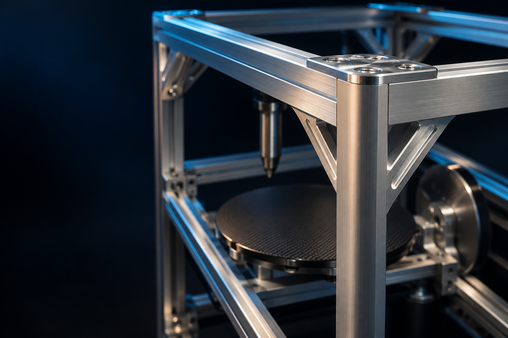
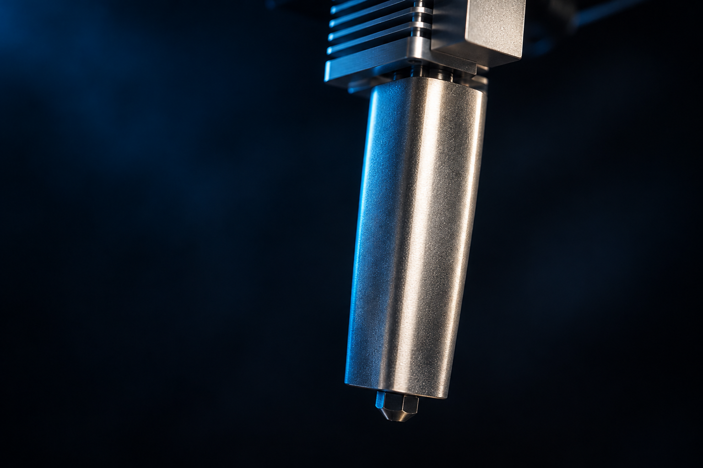
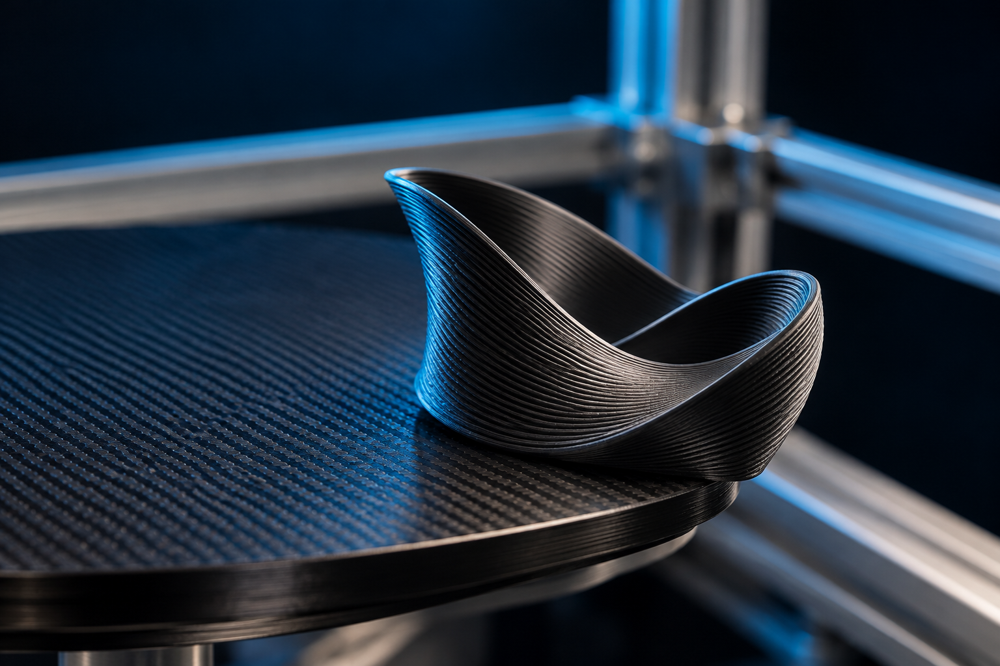

01 / MOUVEMENT
FDM multi-axes
Développement d’architectures de fabrication additive multi-axes pour dépasser les limites de l’impression conventionnelle par couches planes.
Ingénierie · Recherche · Développement
Développer les technologies de nouvelle génération pour le FDM haute performance et multi-axes.
FDM multi-axes · Extrusion haut débit
Génération de trajectoires avancées

Nos axes de développement
MYCNC3D développe des technologies avancées pour la fabrication additive de nouvelle génération.
Développement d’architectures de fabrication additive multi-axes pour dépasser les limites de l’impression conventionnelle par couches planes.

Recherche et développement de systèmes d’extrusion haute performance pour augmenter le débit de matière et permettre un dépôt à l’échelle industrielle.

Développement et évaluation de stratégies de trajectoires avancées pour le FDM non planaire et multi-axes, avec de nouvelles approches de tranchage et de génération des mouvements.
Illustrations conceptuelles inspirées des recherches et prototypes MYCNC3D.
Matériel · Logiciel · Procédé
MYCNC3D est une société française qui associe ingénierie mécanique, technologies d’extrusion, développement de machines et recherche logicielle pour explorer de nouvelles approches de fabrication additive.
Contact
MYCNC3D SAS · Lembach, France
yannick@mycnc3d.com